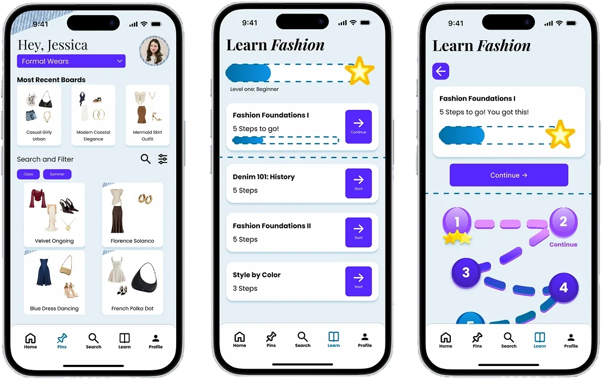
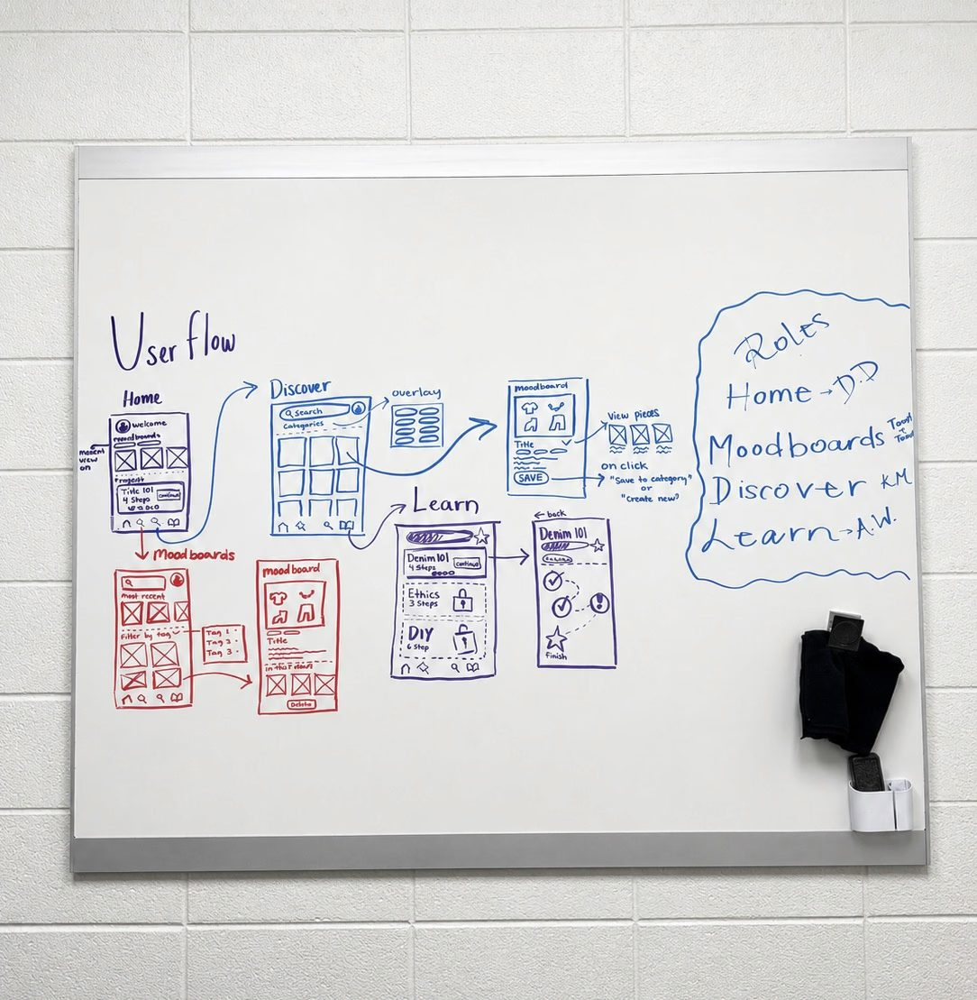
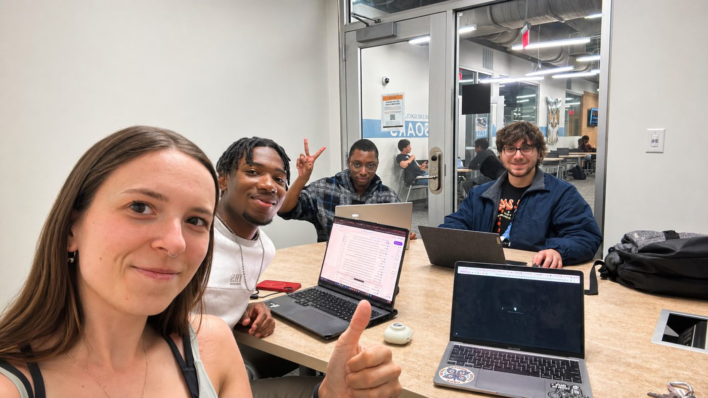

Blueprint
A personal style and fashion education app that helps people discover and define their unique style.

- Client
- Interaction Design II
- Timeline
- 4 months, 2026
- My role
- Team member
- Tools
- Teams, Figma, FigJam, Pinterest
- Team
- Tolina Yussuf, Project Manager
- Trenton Gwyn
- Dylan DeWick
- Kalvin McCloskey
- Avery Wright
The problem
How many of you wake up and realize none of your clothes are speaking to you, or catch yourself overthinking an outfit until you get frustrated and just settle?
Clothing is deeply tied to our personalities and moods, which makes our clothes a direct expression of who we are as individuals. Still, many people find themselves in an endless spiral of chasing trends that are gone by the next week, swinging between feeling like fashion can be whatever you make of it and complete inspiration burnout.
A lot of people struggle to find their personal style and keep a curated closet of clothes they actually want to wear.
Our goal
Make fashion a more accessible and fun part of life to explore.
Blueprint is a personal style and fashion education resource designed to help you discover and define your unique style.
The opportunity
Existing products and fashion services don't give users a way to curate their own style or the creative freedom that comes with it, and they rarely offer essential fashion education.
Blueprint fills that gap with a gamified approach to fashion education and a space where users can save their fashion ideas in mood boards.
- Mood boards
- Learning modules
- Achievements
- Fashion genre discovery
My role
As a team member, I worked directly with our Project Manager, Tolina, to build her app idea from the ground up.
Research and strategy
I helped build our lean UX canvas, including our problem statement, goals, and personas, and took part in weekly design sprints.
Testing and interviews
I joined team meetings, ran usability tests, and hosted a user interview.
Wireframes
I sketched our low-fidelity wireframe on a whiteboard using the features we agreed on. It became the foundation for our first designs in Figma.
The Learn page
I designed the Learn page in Figma and refined it based on feedback and our usability test results.
Branding
I'm passionate about branding and illustration, so I designed the app's logo and the thumbnail for our Figma file.

What I learned
Working on Blueprint taught me a lot about myself, my work style, and how to handle conflicts or miscommunication when they come up.
The semester was a rollercoaster. I normally use a calendar to keep track of due dates, but I didn't start one until two months into the project.
Next time: plan ahead and assign tasks early, instead of just getting them done on time.

The outcome
Blueprint helps people move beyond trend-chasing and toward discovering a personal style.
Through collaboration, iterative design, and feedback, our team turned a common frustration with fashion into a fun way to learn about it. Contributing to Blueprint helped me grow as both a designer and a teammate. It strengthened my UX process skills and showed me how important planning, communication, and adaptability are when working with a team.